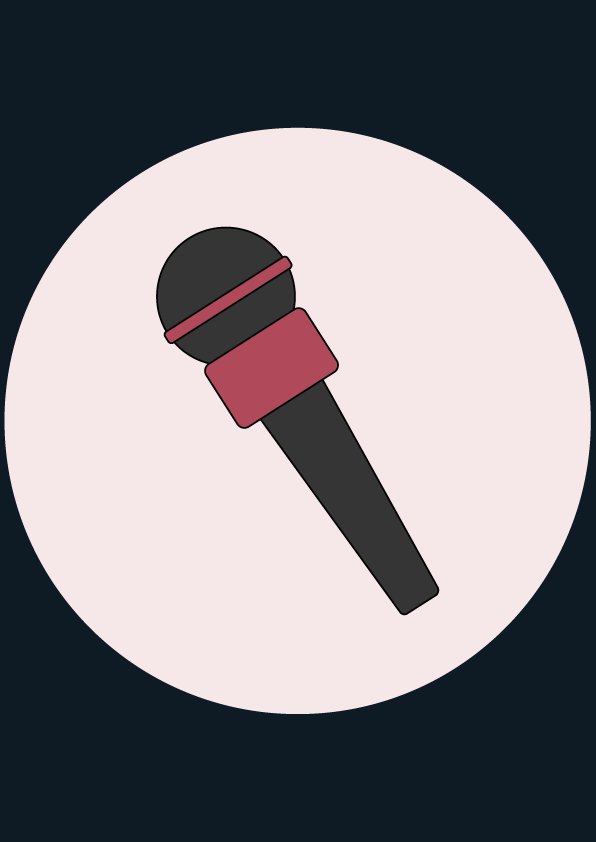

Journalisten
Uppgift:
Din uppgift som journalist är att lyssna efter rykten om och från de personer du stöter på.
Utöver rykten har du även möjligheten att snabbt få information om personerna genom gamla nyheter.
Lyssna noga. Kanske är det dina öron som löser brottet!
ID-kort

Tiden är slut!